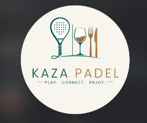

1h20
Tempo de quadra

Um novo complexo de Padel nasce para elevar o padrão esportivo. Nós existimos para agregar a camada de Pilates e Recovery — o motor de sustentabilidade, recorrência e cuidado que completa a experiência de quem entra em quadra.
O padel é o esporte que mais cresce no mundo por unir conexão, saúde e experiência social. Uma mistura de tênis, beach tennis e squash, tão acessível que qualquer um consegue jogar desde o primeiro dia.
Apesar de fácil para começar, o esporte logo revela sua profundidade: exige reflexo rápido, estratégia e posicionamento. Ele une diferentes gerações — dos 8 aos 80 anos —, e se torna o ambiente perfeito onde esporte, networking e gastronomia se encontram. A quadra da Kaza Padel é o lugar onde bons negócios e amizades vão nascer e se multiplicar.
Percebemos uma oportunidade de contribuir com uma área que dominamos profundamente — o corpo, o movimento e a recuperação — e que pode fortalecer o fluxo do complexo e trazer uma receita sustentável para a operação.
No universo intenso do Padel, o esporte cobra muito do corpo. Oferecer apenas um recovery não sustenta o fluxo de forma isolada, mas a combinação de Pilates (como motor de viabilidade) e Recovery (em terraço e salas inferiores) muda o jogo. É a camada que faz o atleta amador e o profissional jogarem com mais segurança, performance e menos lesões. Mais qualidade na quadra. Mais gente voltando.
Quando o assunto é preparar e recuperar corpos para o movimento e cuidar de atletas de alta performance, a referência se constrói na prática. Nossa equipe conta com vasta experiência em Pilates e acompanhamento de atletas, garantindo a credibilidade técnica que a Kaza Padel merece.
O esporte cresce e a vontade de jogar atrai desde iniciantes até atletas de ponta. Essa energia movimenta o clube, mas o desgaste físico é inevitável e exige cuidado contínuo.
O padel gera alto impacto, exigindo muito das articulações. Sem um trabalho focado em prevenção e fortalecimento através do Pilates, as lesões afastam o jogador e prejudicam a recorrência.
Mais do que relaxar, as banheiras e botas de compressão oferecem uma recuperação ativa. O jogador sai da quadra, recupera a musculatura e já garante a alta performance para o jogo de amanhã.
Enquanto o Recovery lida com o desgaste imediato, o Pilates atua como o motor de rentabilidade contínua: corrige a biomecânica, fortalece o corpo e cria um ecossistema completo para o atleta.
Já usamos inteligência artificial nos nossos eventos — para acabar com filas e elevar a experiência de clientes e atletas. Aqui, a mesma inteligência fecha todo o ecossistema do empreendimento: cada ganho de mobilidade, cada partida vencida e cada fundamento dominado vira dado, jogo e recorrência.
Sem fila, com fluxo inteligente e experiência fluida — a tecnologia que aplicamos em campeonatos, agora dentro do empreendimento.
Ganho de mobilidade e flexibilidade, o primeiro set ganho, os golpes que já domina, quem indicou e trouxe — tudo vira conquista, pontos e motivo para voltar.
Relógios, anéis e gadgets: tempo em quadra, calorias gastas e evolução conectados automaticamente ao perfil de cada cliente.
Integração com Strava e Instagram/Reels, histórico e resultados sintetizados num único app. Se ainda não pensaram nisso, nós entregamos.
Cada detalhe cuidado eleva a percepção de um empreendimento que já nasce sofisticado.
Praticantes amparados desde a estreia — menos incidentes, menos experiências ruíns.
Quem se sente cuidado e evolui, volta. A camada de cuidado é uma máquina de retenção.
Um nome com credibilidade real na cena esportiva compõe a reputação do projeto.
Cultura de acolhimento que evita panelas e faz cada visitante se sentir parte.
Saúde e movimento viram narrativa, evento e diferencial — não custo operacional.
Cada formato pode começar de forma otimizada — focando no fluxo principal do Padel — e evoluir. O melhor desenho é o que construirmos juntos, integrando Pilates e Recovery à realidade da Kaza Padel.
Nós estruturamos, operamos e entregamos a camada de Pilates e Recovery dentro do complexo de Padel.
Construção conjunta de pacotes, onde o cuidado físico agrega valor direto à mensalidade e uso das quadras.
Começamos pelo Recovery como ponto de apoio imediato e expandimos para o estúdio de Pilates focado no atleta.
Atuação especializada da clínica durante os campeonatos de Padel, garantindo a performance dos competidores.
Sobre estrutura e investimento, estamos abertos. A conversa que nos interessa não é sobre metro quadrado — é sobre entregar o melhor suporte físico para que a Kaza Padel seja a principal referência esportiva.
Não queremos apenas ocupar um espaço. Queremos ajudar a construir uma experiência em que o corpo esteja preparado para viver melhor cada onda, cada encontro e cada memória criada aqui dentro.